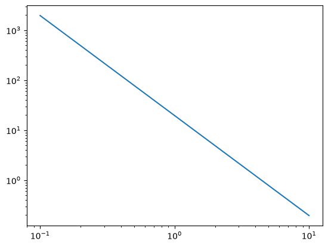
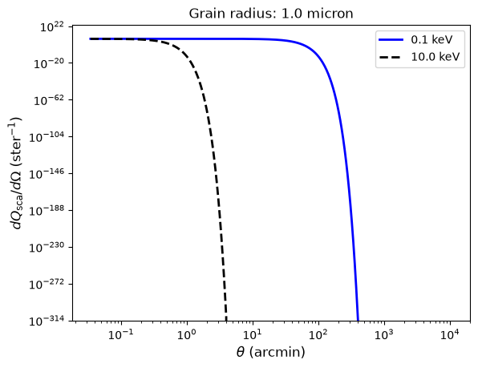
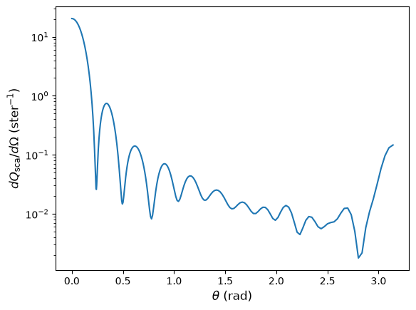
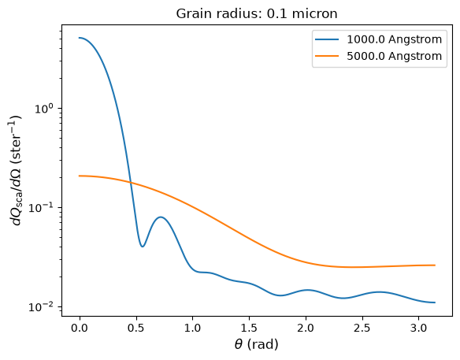
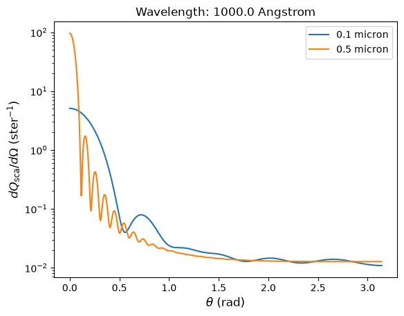

Computing scattering and extinction efficiencies¶
Different physical assumptions and numerical methods can be used to model how light propagates through a solid material. The xdust.scatteringmodel module provides several interchangeable scattering models:
xdust.scatteringmodel.Mie()– the Bohren & Huffman (1983) Mie-scattering algorithm, sped up with vectorized computations. This can be demanding on RAM depending on the wavelength resolution and number of grain radii used, so some care is needed at high resolution.xdust.scatteringmodel.RGscattering()– the Rayleigh-Gans approximation, relevant for grains much larger than the wavelength of light and relatively transparent to it (i.e. \(|m - 1| \ll 1\), where \(m\) is the complex index of refraction).xdust.scatteringmodel.PAH– reads and interpolates tables of extinction properties for polycyclic aromatic hydrocarbons (PAHs) from Li & Draine (2001).
By the end of this tutorial, you will be able to:
run a scattering calculation with
RGscatteringandMieunderstand the shape and meaning of the resulting efficiency arrays (
qsca,qabs,qext,diff)compute and verify a differential scattering cross-section as a function of angle
avoid exceeding available memory when using the
Miemodel
To compute extinction, a scattering model needs a xdust.graindist.composition.Composition object (which supplies the optical constants of the compound) and an array of grain radii. If the grain radii have no attached units, they are assumed to be in microns.
import numpy as np
import matplotlib.pyplot as plt
import astropy.units as u
import astropy.constants as c
import xdust
The Rayleigh-Gans model¶
This example computes Rayleigh-Gans scattering using the Drude approximation for the index of refraction.
# Energy grid for the calculation
energy_grid = np.logspace(-1, 1, 30) * u.keV
# A single grain size
grain_radius = np.array([1.0]) * u.micron
# Angular grid, used later for the differential cross-section
theta_grid = np.logspace(-5., np.log10(np.pi), 1000) * u.rad
# A Composition object using the Drude approximation
drude = xdust.graindist.composition.CmDrude()
# The Rayleigh-Gans scattering model
rg_model = xdust.scatteringmodel.RGscattering()
rg_model.calculate(energy_grid, grain_radius, drude)
The results of the calculation – various attenuation efficiencies – are stored as attributes on the ScatteringModel object. Efficiency is the physical cross-section divided by the geometric cross-section; for a spherical grain,
where \(\sigma\) is the cross-section for the physical interaction (e.g. scattering) and \(a\) is the grain radius. Efficiencies are unitless.
ScatteringModel.qsca– scattering efficiencyScatteringModel.qabs– absorption efficiencyScatteringModel.qext– extinction efficiency (qsca+qabs)ScatteringModel.diff– differential scattering cross-section, divided by the geometric cross-section
qsca, qabs, and qext are 2-D arrays with shape (NE, NA), where NE is the length of the input energy/wavelength grid and NA is the length of the input grain-size grid.
diff is a 3-D array with shape (NE, NA, NTH), where NTH is the length of the angular grid passed via the theta keyword of ScatteringModel.calculate.
plt.plot(energy_grid, rg_model.qsca)
plt.loglog()
[]

The Rayleigh-Gans-plus-Drude approximation gives a scattering cross-section that decays as \(E^{-2}\).
Computing a differential scattering cross-section¶
To compute the differential cross-section as a function of angle, pass an array of angles via the theta keyword (with or without units – unitless values are assumed to be radians). By default theta is 0; you only need to supply it when you want scattering as a function of angle.
rg_with_angles = xdust.scatteringmodel.RGscattering()
rg_with_angles.calculate(energy_grid, grain_radius, drude, theta=theta_grid)
It helps to check the shape of the resulting arrays before working with them.
qsca is, by definition, integrated over all scattering angles, so it depends only on energy/wavelength and grain radius – its shape is (len(energy_grid), len(grain_radius)).
diff also depends on angle, so its shape is (len(energy_grid), len(grain_radius), len(theta_grid)).
rg_with_angles.qsca.shape
(30, 1)
rg_with_angles.diff.shape
(30, 1, 1000)
With only one grain radius in the grid, we always index the second dimension with 0. Below, we compare the differential scattering cross-section at the lowest energy (index 0) and the highest energy (index -1, the last value in energy_grid).
angle_unit = 'arcmin'
plt.plot(theta_grid.to(angle_unit), rg_with_angles.diff[0, 0, :], 'b-', lw=2, label=energy_grid[0])
plt.plot(theta_grid.to(angle_unit), rg_with_angles.diff[-1, 0, :], 'k--', lw=2, label=energy_grid[-1])
plt.title("Grain radius: {}".format(grain_radius[0]))
plt.xlabel(r'$\theta$ ({})'.format(angle_unit), size=12)
plt.ylabel(r'$dQ_{\rm sca}/d\Omega$ (ster$^{-1}$)', size=12)
plt.loglog()
plt.legend()
<matplotlib.legend.Legend at 0x7f2391d399d0>

As a check, the differential cross-section should integrate over solid angle to the same scattering efficiency computed above. This is generally accurate to within a few percent.
i = -1 # index of the energy value to check
integrand = np.trapezoid(
rg_with_angles.diff[i, 0, :] * 2.0 * np.pi * np.sin(theta_grid.to('rad').value),
theta_grid.to('rad').value,
)
print(integrand / rg_with_angles.qsca[i, 0])
0.9891204573790137
The Mie model¶
This example computes a Mie scattering model for silicate dust grains at a single wavelength.
# A visible wavelength
wavelength_V = 4500. * u.angstrom
# A silicate composition
silicate = xdust.graindist.composition.CmSilicate()
mie_model = xdust.scatteringmodel.Mie()
mie_model.calculate(wavelength_V, grain_radius, silicate, theta=theta_grid)
With a single wavelength value, the shape of diff is worth checking again.
np.shape(mie_model.diff)
(1, 1, 1000)
angle_unit = 'rad'
plt.plot(theta_grid.to(angle_unit), mie_model.diff[0, 0, :])
plt.semilogy()
plt.xlabel(r'$\theta$ ({})'.format(angle_unit), size=12)
plt.ylabel(r'$dQ_{\rm sca}/d\Omega$ (ster$^{-1}$)', size=12)
Text(0, 0.5, '$dQ_{\\rm sca}/d\\Omega$ (ster$^{-1}$)')

As before, verify that the differential cross-section integrates to the scattering efficiency.
check = np.trapezoid(
mie_model.diff * 2.0 * np.pi * np.sin(theta_grid.to('rad').value),
theta_grid.to('rad').value,
)
print(check / mie_model.qsca)
[[0.99993608]]
Note: the Mie model can use a lot of memory¶
The Mie model uses multi-dimensional array operations instead of for-loops, which is fast but can easily exceed the RAM available on a typical laptop or desktop and crash your system. To prevent this, Mie.calculate estimates the memory the computation would require before running it, and prints a warning instead of performing the calculation if that estimate exceeds a limit (8 GB by default, adjustable with the memlim keyword).
The cell below is a deliberately unrealistic example – an energy grid reaching 5 GeV, far outside any regime where dust scattering is physically relevant – included only to demonstrate what the warning looks like. This is expected behavior, not an error: the calculation is intentionally skipped, and the resulting qsca, qext, qabs, gsca, and diff attributes are all set to 0.0 rather than the real arrays.
# Deliberately oversized grid, chosen only to trigger the memory-limit warning
oversized_energy_grid = np.linspace(1000., 5000., 2) * u.keV
oversized_radius_grid = np.linspace(0.1, 0.5, 20) * u.micron
mie_oversized = xdust.scatteringmodel.Mie()
mie_oversized.calculate(oversized_energy_grid, oversized_radius_grid, silicate, theta=theta_grid)
WARNING!! Space needed (8.108976 GB) exceeds memory limit (8.00 GB)
WARNING!! Try increasing the memlim keyword to match available RAM, or decrease sampling
If you have more RAM available and want to proceed anyway, raise memlim (in GB) to a value above the printed estimate:
mie_oversized = xdust.scatteringmodel.Mie()
mie_oversized.calculate(oversized_energy_grid, oversized_radius_grid, silicate, theta=theta_grid, memlim=8.3)
A Mie scattering calculation with all three dimensions¶
The example below uses a moderate grid so that energy/wavelength, grain radius, and scattering angle are all resolved with more than one value, which makes it easier to see how diff varies along each dimension.
wavelength_grid = np.linspace(1000., 5000., 5) * u.angstrom
radius_grid = np.linspace(0.1, 0.5, 20) * u.micron
mie_grid = xdust.scatteringmodel.Mie()
mie_grid.calculate(wavelength_grid, radius_grid, silicate, theta=theta_grid)
Compare the differential scattering cross-section at two different wavelengths (same grain radius):
angle_unit = 'rad'
plt.plot(theta_grid.to(angle_unit), mie_grid.diff[0, 0, :], label=wavelength_grid[0])
plt.plot(theta_grid.to(angle_unit), mie_grid.diff[-1, 0, :], label=wavelength_grid[-1])
plt.semilogy()
plt.title("Grain radius: {}".format(radius_grid[0]), size=12)
plt.xlabel(r'$\theta$ ({})'.format(angle_unit), size=12)
plt.ylabel(r'$dQ_{\rm sca}/d\Omega$ (ster$^{-1}$)', size=12)
plt.legend()
<matplotlib.legend.Legend at 0x7f238f93e390>

…or at two different grain sizes (same wavelength):
angle_unit = 'rad'
plt.plot(theta_grid.to(angle_unit), mie_grid.diff[0, 0, :], label=radius_grid[0])
plt.plot(theta_grid.to(angle_unit), mie_grid.diff[0, -1, :], label=radius_grid[-1])
plt.semilogy()
plt.title("Wavelength: {}".format(wavelength_grid[0]), size=12)
plt.xlabel(r'$\theta$ ({})'.format(angle_unit), size=12)
plt.ylabel(r'$dQ_{\rm sca}/d\Omega$ (ster$^{-1}$)', size=12)
plt.legend()
<matplotlib.legend.Legend at 0x7f238f3b8450>
